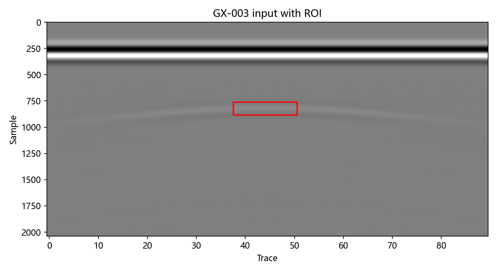
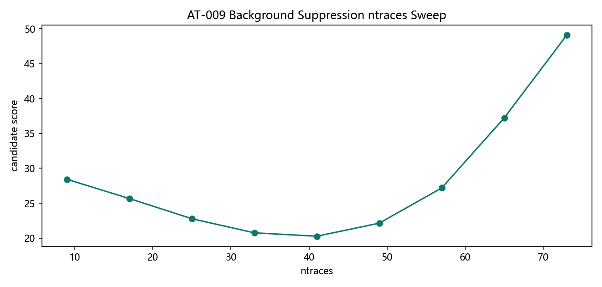
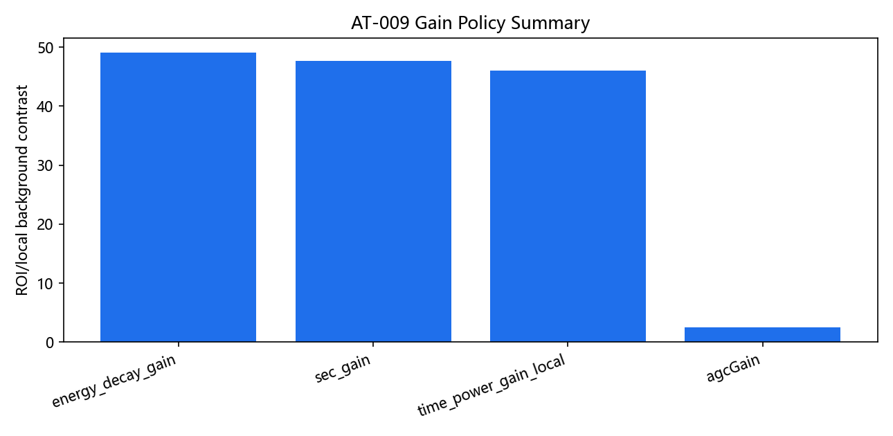
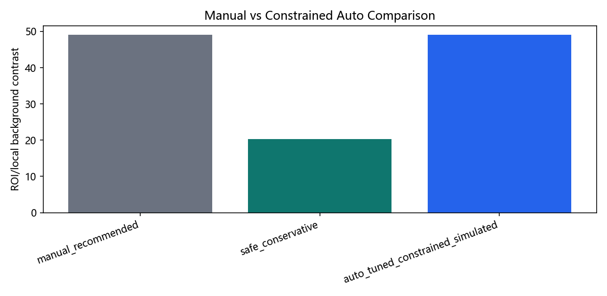
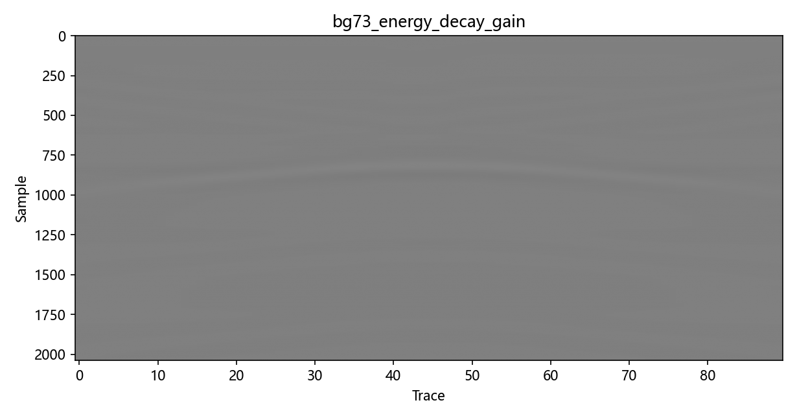
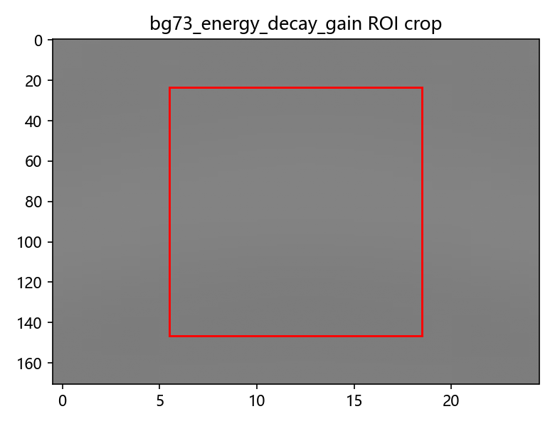

AT-009 Background Suppression Domain Convergence + Gain Policy Refinement
Source commit:
ffb86822ccf273e5f38c26dd6a37d547b59ee4b8Dataset: pipe_demo_longline_v1 [2037, 90]
Zero-time policy:
excludedDewow policy:
excluded_primary
Boundary: Primary lane is
background_suppression -> gain. Zero-time and dewow are excluded in primary validation. AGC is display-oriented/non-amplitude-preserving.
Recommended ntraces range:
73-73Best conservative/interpretable gain:
energy_decay_gainConstrained AutoTune status:
inconclusive_near_tieKey figures






Constrained AutoTune comparison
| Branch | ntraces | Gain | ROI contrast | Clipping | Risk flags |
|---|---|---|---|---|---|
| manual_recommended | 73 | energy_decay_gain | 49.09 | 0.001004 | |
| safe_conservative | 41 | energy_decay_gain | 20.28 | 0.001004 | |
| auto_tuned_constrained_simulated | 73 | energy_decay_gain | 49.09 | 0.001004 | best_params_at_edge |
Known risks
- Single native gprMax scene is still insufficient for broad generalization.
- Constrained AutoTune result is domain-bounded and may shift on other scenes.
- Dewow is excluded in this primary lane; this is not global dewow invalidation.